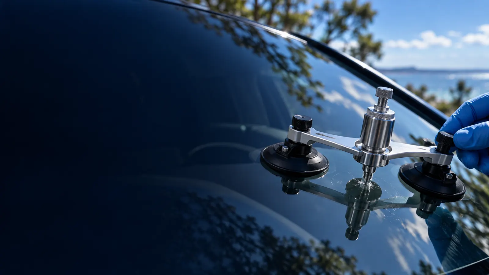
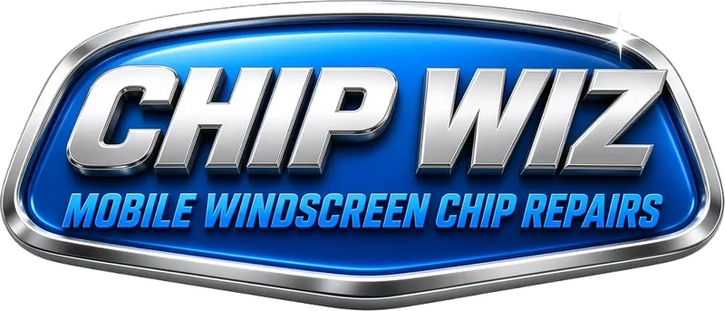
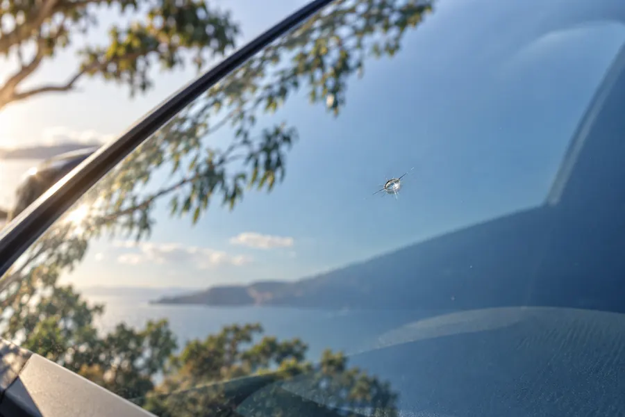
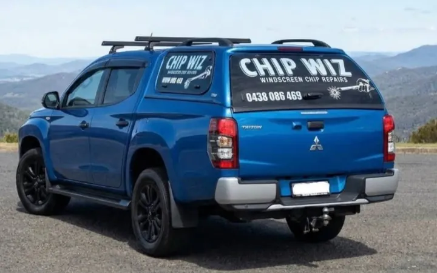
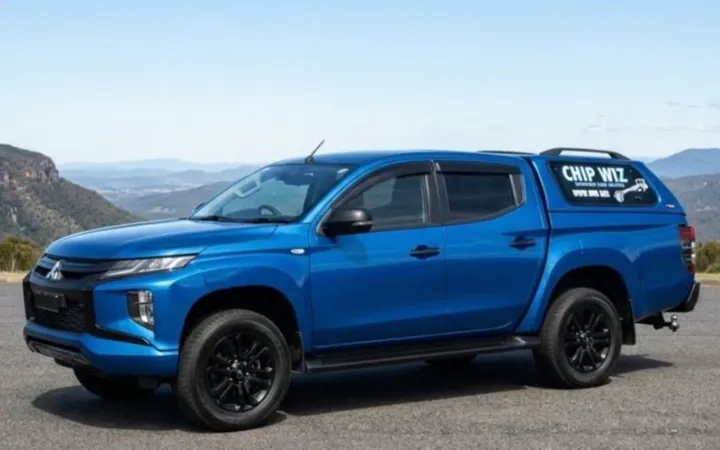

Inject the resin
Specialist equipment injects an optically matched resin into the chip, replacing the air trapped inside the damaged glass.

Repair illustrationMOBILE SERVICE · CAMPBELLTOWN

Permanent stone-chip repairs at your location.
Call Chip Wiz0438 086 469Campbelltown & surrounding areas
SPECIALIST WINDSCREEN CHIP REPAIR
A windscreen chip repair is a permanent repair—not a patch to hold you over until replacement.
Specially formulated resin fills the damaged area and is cured to bond with the glass. This strengthens the repaired area, helps prevent the damage from spreading and improves the appearance of the chip.
Your windscreen stays in the vehicle throughout the repair. A permanent repair does not mean an invisible repair: a blemish can remain, depending on the original damage.

We do not replace windscreens or repair long cracks, side windows, rear glass or mirrors.
HOW WINDSCREEN REPAIR WORKS
Specialist equipment injects an optically matched resin into the chip, replacing the air trapped inside the damaged glass.
The resin is cured to form a strong bond with the glass. It strengthens the damaged area and helps stop the chip from spreading.
The cured resin is levelled with the windscreen surface and polished to a smooth finish, improving the clarity of the repaired area.

YOUR LOCAL CHIP-REPAIR SPECIALIST
Chip Wiz is a mobile windscreen chip repair business based in Campbelltown, NSW, serving the surrounding suburbs out to Moorebank, Kemps Creek and Appin.
We bring the repair service to your location. Our focus is windscreen chips—not glass replacements.
Speak with Chip WizBEFORE YOU ARRANGE A REPAIR
That’s a useful starting guide for a chip-repair enquiry. The type and condition of the damage also matter, so we assess the chip before deciding whether it can be repaired.
A windscreen chip repair usually takes 15 to 30 minutes. The time required depends on the type and condition of the damage.
Repairing suitable damage avoids removing and replacing the entire windscreen. It is a cost-effective option that also reduces unnecessary glass waste.
Call with a description of the chip and your suburb for a quote, and to check appointment availability.
MOBILE SERVICE COVERAGE
Our current service area is listed below. Call Chip Wiz to confirm your address and arrange an appointment.
Boundary: Moorebank, Kemps Creek and Appin.
Not sure whether your location is covered?
Call 0438 086 469CHIP WIZ
Call for a quote and to check appointment availability.
